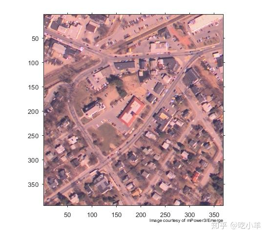
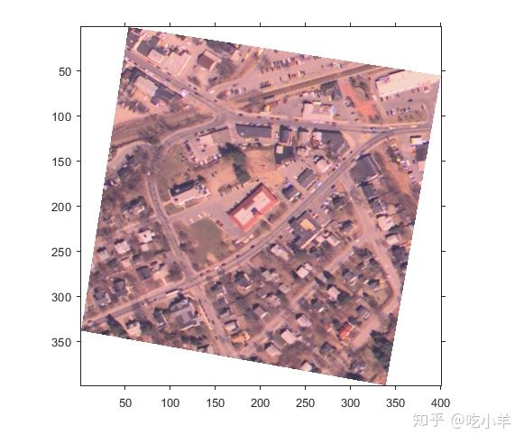
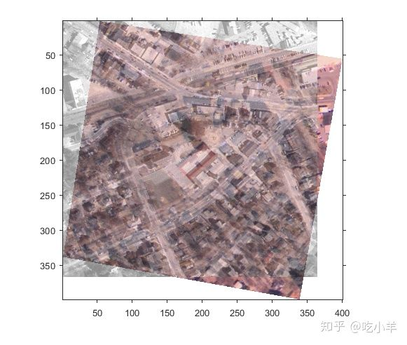
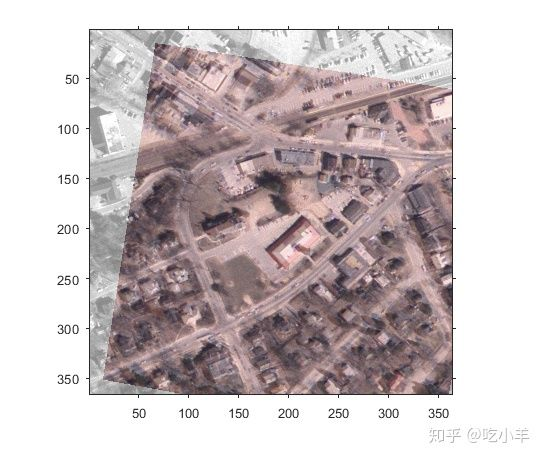
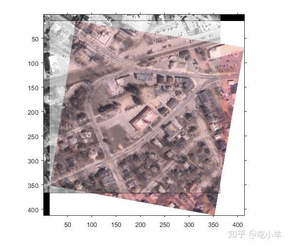

Home
本示例说明如何使用空间参照对象来理解图像配准中两个图像之间的空间关系并有效地显示它们。此示例使一个图像（称为moving图像）与另一个图像（称为fixed图像）对齐。
读取同一场景的两张稍微错开的图像。
fixed = imread('westconcordorthophoto.png');
moving = imread('westconcordaerial.png');
显示moving（未配准的）图像。
iptsetpref('ImshowAxesVisible','on')
imshow(moving)
text(size(moving,2),size(moving,1)+30, ...
'Image courtesy of mPower3/Emerge', ...
'FontSize',7,'HorizontalAlignment','right');

加载一个MAT文件，该文件包含fixed和moving图像的预选控制点，并使用fitgeotrans创建适合控制点的几何变换。
load westconcordpoints tform = fitgeotrans(movingPoints, fixedPoints, 'projective');
用imwarp函数，执行将moving图像与fixed图像配准所需的变换。本示例使用可选的'FillValues'参数指定填充值（白色），当fixed在转换后的moving图像上显示图像时，这将有助于检查配准。请注意，几何变换后的moving图像有全部原图像的内容，现在称为registered。另请注意，没有空白行或列。
registered = imwarp(moving, tform,'FillValues', 255); figure, imshow(registered);

使用imshowpair覆盖转换后的registered图像到fixed图像上。请注意，这两个图像看起来是未配准的。发生这种情况是因为imshowpair假定图像都在默认的固有坐标系中。后续步骤提供了两种方法来解决此显示问题。
figure, imshowpair(fixed,registered,'blend');

将转换后的图像registered，调整该图像相同的行数和列数以及相同的空间范围，与fixed相同。这确保了图像registered看起来与图像fixed配准，但是registered图像的范围超出fixed图像范围的区域被丢弃。为此，请创建一个默认的空间参照对象，该对象指定fixed图像的大小和位置，并使用imwarp的 'OutputView'参数创建一个受约束的重采样图像registered1。在fixed图像上显示registered图像。在此视图中，图像似乎已被配准，但并非所有未配准的图像都是可见的。
Rfixed = imref2d(size(fixed)); registered1 = imwarp(moving,tform,'FillValues', 255,'OutputView',Rfixed); figure, imshowpair(fixed,registered1,'blend');

或者，使用imwarp可选项，返回输出空间参考对象，该对象表明完全转换的图像与fixed图像在相同的默认固有坐标系中的位置。在固定图像上显示注册图像，并注意，现在我们可以看到完整的registered图像。
[registered2, Rregistered] = imwarp(moving, tform,'FillValues', 255); figure, imshowpair(fixed,Rfixed,registered2,Rregistered,'blend');

请理一下。
iptsetpref('ImshowAxesVisible','off')
======================================================================
我的测试结果及程序
下面是我测试的代码：

注：本文根据MATLAB官网内容修改而成。